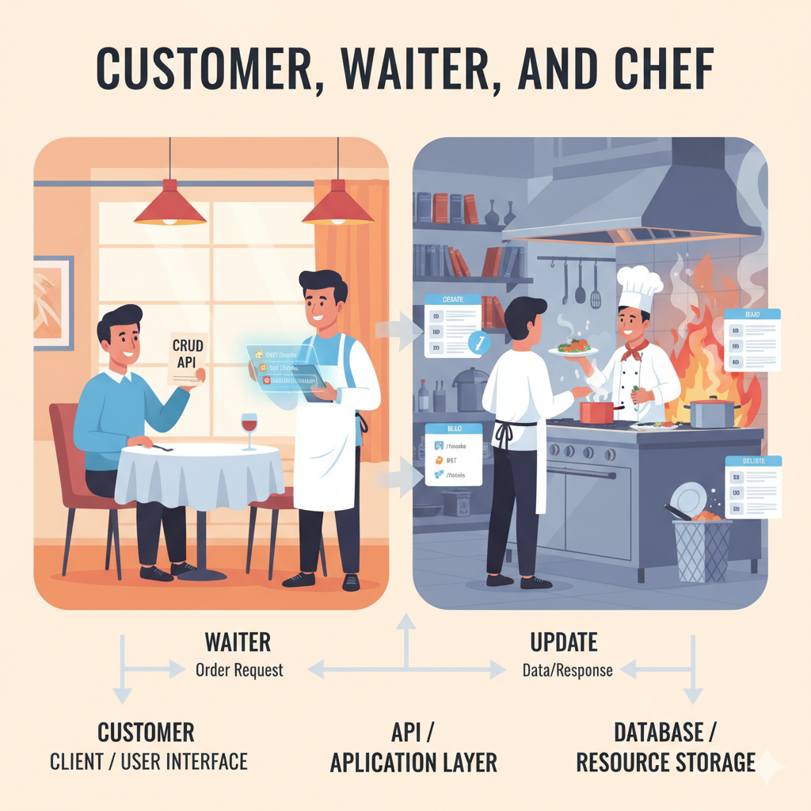

Field Note — REST APIs Explained
The Waiter's API: Node.js CRUD for Chefs & Customers

Imagine you're at a restaurant, eager to enjoy a meal. The process of ordering and receiving your food is a great way to understand how an API works.
-
01 · Customer
The Client / User Interface
You, sitting at the table, deciding what you want to eat.
You don't know — or care — how the food is cooked, what ingredients are in the kitchen, or the chef's secret recipes.
In API terms: the client application or user interface. This could be a web browser, a mobile app, or even another server — the part that needs information or wants to perform an action.
The interaction: the customer (client) makes a request — "I'd like a steak."
-
02 · Waiter
The API / Application Layer
The person who takes your order, brings it to the kitchen, and delivers the food back to you.
They are the intermediary — speaking both the customer's language (menu items) and the chef's language (cooking instructions).
In API terms: the API itself, specifically the server-side application layer (e.g. a Node.js/Express app).
The interaction: receives the customer's request (an HTTP request like
GET /menu/steakorPOST /orders), translates it into instructions for the chef, passes them along, then delivers the finished dish — the data/response — back to the customer. -
03 · Chef
The Database / Resource Storage
The master of the kitchen, responsible for preparing the food according to instructions.
They manage all the ingredients, cooking equipment, and recipes, and only interact with the waiter — never directly with the customer.
In API terms: the database or resource storage (e.g. MongoDB) — where the actual data is stored and the operations are performed.
The interaction: receives precise instructions from the waiter ("get ingredients for steak," "cook medium-rare," "add a new dessert," "remove a dish"), accesses and processes the data, then hands the finished result back to the waiter.